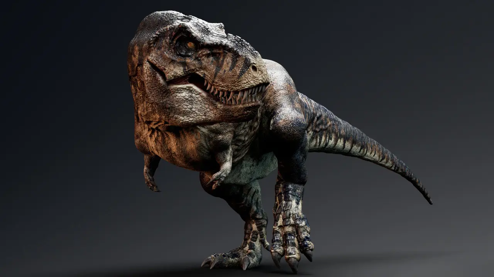
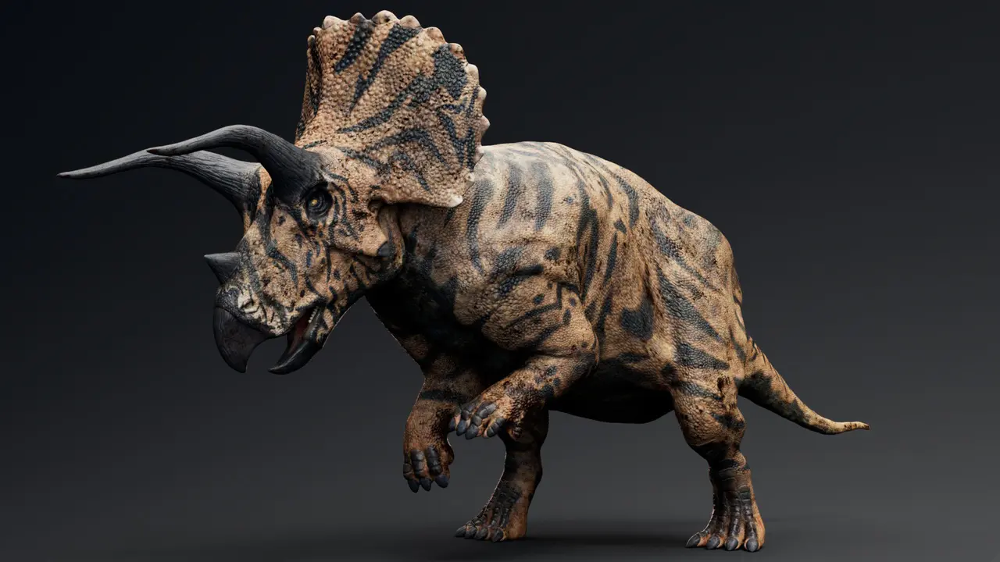
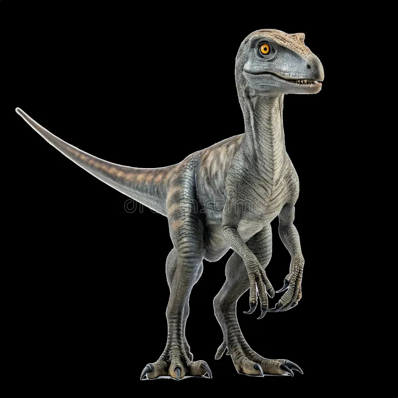
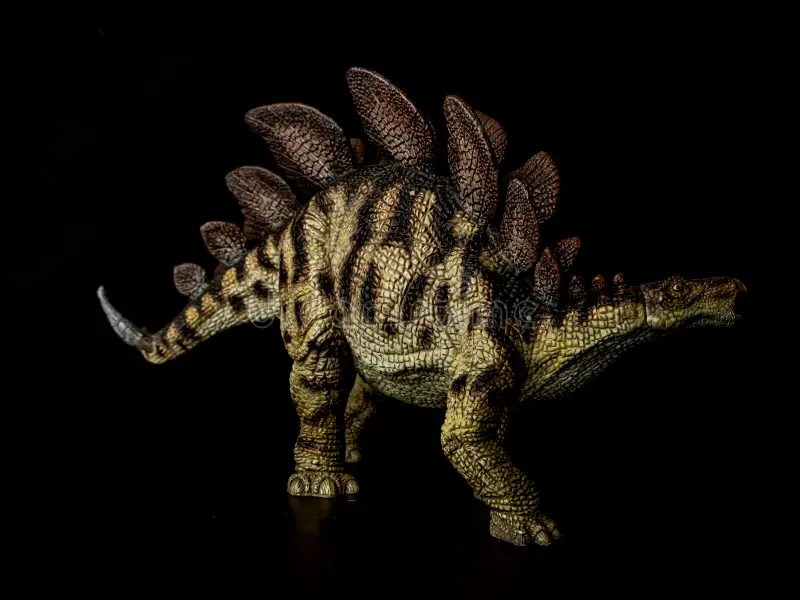

Los dinosaurios fueron un grupo diverso de reptiles terrestres que dominaron los ecosistemas de la Tierra durante la era Mesozoica, hace aproximadamente 235 a 66 millones de años. Se caracterizaban por tener patas situadas debajo del cuerpo, postura erguida, reproducción ovípara y, actualmente, se sabe que las aves son sus descendientes vivos.

Este "rey de los dinosaurios" es conocido por su enorme tamaño y su poderosa mordida. A pesar de sus diminutos brazos, sus dientes afilados como navajas lo convierten en un verdadero superdepredador.

Con sus tres cuernos y su gran gola, el Triceratops suele representarse como el feroz adversario del T. rex. Esos cuernos no son solo un adorno: son herramientas importantes tanto para la defensa como para el ataque.

Si bien estos dinosaurios eran en realidad bastante pequeños (aproximadamente del tamaño de un pavo), Parque Jurásico Los convirtieron en depredadores de gran inteligencia que cazan en manada. No se dejen engañar por su tamaño: son rápidos, inteligentes y letales.

El estegosaurio es conocido por las grandes placas óseas a lo largo de su lomo y las púas en su cola. Puede que pareciera lento y torpe, pero poseía importantes mecanismos de defensa.